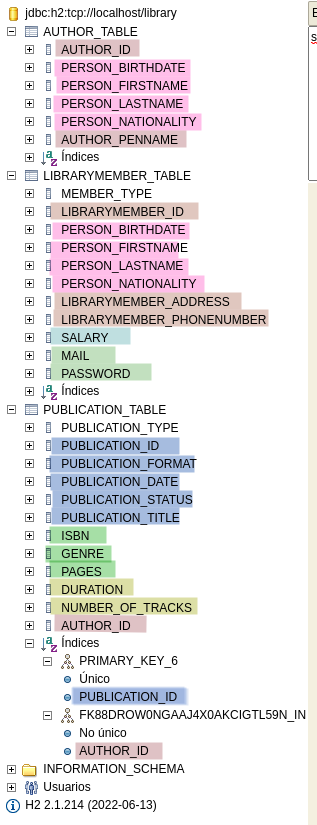

Basic understanding of Java programming language is required, as well as some familiarity with Maven or Gradle for managing dependencies and building the project.
Use of Interfaces and Abstract classes to implement features.
Describe the required models that might define the solution to a Library implementation. Create multiple classes in Java using the most convenient entity relationship between them to implement the solution.
Test these classes using JUnit.
Create a new Maven or Gradle project and setting up the project structure
Modify the project’s pom.xml or build.gradle file to import necessary dependencies, including JUnit for testing
Implement the required classes in Java
Implement User interactive interfaces for each manager
Write JUnit tests to verify that classes work as expected
Allow the user to input data via the console, rather than using hard-coded test data in JUnit tests
Introduction
In LibraryProject, the User and Staff classes could have different operations that they are authorized/able to perform.
The User class could have the following operations:
Search for books
Borrow a book
Return a book
Check the status of borrowed books
Update personal information
The Staff class could have the following operations:
Add a new book
Remove a book
Update the book details
Register a new user
Remove a user
Update the user details
Generate reports on library operations
To implement these operations, we could define three separate interfaces:
UserOperations
StaffOperations
GeneralOperations
In case of doubt…
Remember, Interfaces have no state, thus they don’t have variables (any attribute defined in an Interface is treated as a constant), and they are responsible of telling the classes that implement it what methods to support.
If you need to keep track of the state of your instances (i.e. attributes), then go for the abstract class and extend it to the required subclasses.
Here are some good points regarding Interfaces and Abstract classes:
Instance variables in interface: It’s a risky approach because they aren’t treated as variables but final static (i.e, constants). If you need to define variables for your classes as well as mandatory methods implementation, then go for the Abstract class approach
Interfaces
The three interfaces GeneralOperations, UserOperations and StaffOperations provide a clear separation of concerns and responsibilities within the library management system.
GeneralOperationsinterface provides methods that are commonly used by both users and staff, such as searching for books and creating an account.
UserOperationsinterface includes methods that are specific to users, such as updating personal information, borrowing and returning books, and checking their borrowed books.
StaffOperationsinterface includes methods that are specific to staff members, such as adding, removing, and updating book details, as well as registering and updating user details and generationg reports.
By separating these different functionailities into interfaces, it becomes easier to implement and maintain the system.
Interfaces allow the developers to implement their features knowing beforehand the expected available methods of future classes.
Abstract class
Finally, the LibraryMember abstract class is a parent class for users and staff members, which includes common fields such as id, address, and phoneNumber.
By defining these fields in an abstract class, it allows for different types of users and staff members to inherit them and avoid duplication of code.
UML
Previous drafts
The two UML diagrams describe the core features of a libraryProject, specifically the use cases for borrowing and issuing books, as well as the roles and responsibilities of users and librarians/staff members.
The first diagram, Core features: borrow and issue, depicts the interaction between the user and the system, as well as the system and the librarian:
TODO
Create link to the previous UML
The second diagram, Core features: user and librarian (staff), expands on the roles and responsibilities of users and librarians/staff members.
TODO
Create link to the previous UML
Current UML
TODO
Create new UML
Publications
classDiagram
direction BT
%% Interface
class PublicationOperations {
<<interface>>
+ publish() void
}
%% Abstract class
class Publication {
<<abstract>>
- String id
- String title
- Author author
- LocalDate publicationDate
- String format
+ getId() String
+ getTitle() String
+ getAuthor() Author
+ getPublicationDate() LocalDate
+ getFormat() String
}
Publication ..> PublicationOperations
%% Publication Entity classes
class Book {
- String ISBN
- int pages
- int genre
+ getISBN() String
+ getPages() int
+ getGenre() String
}
class CD {
- int duration
- int numberOfTracks
+ getDuration() int
+ getNumberOfTracks() int
}
class DVD {
- int duration
+ getDuration() int
}
Book ..> Publication
CD ..> Publication
DVD ..> Publication
Library Members
classDiagram
direction BT
%% Relationships
LibraryMember ..> GeneralOperations
LibraryMember ..> Person
Staff ..o StaffMember
StaffMember ..> StaffOperations
StaffMember ..> LibraryMember
User ..o LibraryMember
User ..> BorrowOperations
Librarian ..o StaffMember
Librarian ..> BorrowOperations
%% Interfaces
class GeneralOperations {
<<interface>>
+ createAccount(): void
+ searchPublications(query: String): void
}
class BorrowOperations {
<<interface>>
+ createBorrow(item: Publication) void
+ returnBorrow(item: Publication) void
+ updateBorrow(item: Publication) void
}
class StaffOperations {
<<interface>>
+ addPublication(item: Publication) void
+ removePublication(item: Publication) void
+ updatePublication(item: Publication) void
+ registerMember(member: LibraryMember) void
+ removeMember(member: LibraryMember) void
+ updateMember(member: LibraryMember) void
+ generateReports() void
}
%% Abstract class
class Person {
<<abstract>>
- firstName: String
- lastName: String
- nationality: String
- birthdate: LocalDate
}
class LibraryMember {
<<abstract>>
- id: String
- address: String
- phoneNumber: String
}
class StaffMember {
<<abstract>>
- double: salary
}
%% Entities
class User {
- String: mail
- String: password
}
class Staff {
}
class Librarian {
}
Migrating to SpringBoot
With the core model defined and its functionalities, let’s migrate the project to a SpringBoot project to enable Web features, so we can use REST controllers to access the application and its databases.
User interface
Let’s define the different domains that are accessible through a user interface.
In a web interface, domains could be:
/user with a private access, only available to Library Users
/librarian with a private access, only available to Librarians
/web with a public access, available to any person that access the webpage
Controllers
In the backend, we need controllers for user and librarian, with access to the Library db.
Requests can be of multiple forms, such as API Rest, HTML, websockets…
Required methods to resolve the requests coming from the frontend must be implemented into each actor (user and library). These methods invoke other classes like @Service and @Repository, that have the utils required to resolve the requests.
@Service and @Repository here are like the Manager classes
We treat them as the source of all utilities that execute the response logic
Databases
For this project, we’ll be using H2. H2 is a Java SQL database with the following main features:
Very fast, open source, JDBC API
Embedded and serer modes; in-memory databases
Browser based Console application
Small footprint: around 2.5 MB jar file size
Creating entities
We need to define entities that will persist inside DB: - Any Publication subclass object - Any LibraryMember subclass object: - This includes User, Librarian and Staff - Borrows objects
Each entity must define its primary key with the @Id annotation. When inheritance is present, then the parent class should define it as well as the @Inheritance type.
If the parent class isn’t going to be instantiated, only define the @MappedSuperClass annotation to allow subclasses to inherit its JPA attibutes
Each first class that defines a new DB table where to store this’ or their subclasses’ instances must define the following annotations:
@Entity, even though this class doesn’t create instances (mandatori for its subclasses)
@Table name where to store all instances
@Inheritance strategy, such as SINGLE_TABLE to store all subclass entities into this single table
If SINGLE_TABLE is selected, then the parent class must define @DiscriminatorColumn with a name and its value type. Child classes must then define the proper @DiscriminatorValue that will be inserted in the previous column when inserted into the table
If TABLE_PER_CLASS is selected, then each subclass will create its own @Table inside the DB. If no @Table annotation is defined in subclasses, then the subclass name is used as its table name
When there’s a composition relationship between classes, then we have to define its multiplicity using the @ManyToMany, @OneToOne, @ManyToOne or @OneToMany annotations.
ERROR when defining @ManyToOne relation
j.LocalContainerEntityManagerFactoryBean : Failed to initialize JPA EntityManagerFactory: Association 'com.springbootlab0.approach_1.domain.Publication.author' targets an unknown entity named 'com.springbootlab0.approach_1.domain.Author'
This error is due to bad annotations between inherited classes, not a @ManyToOne issue. Publication class couldn’t find the Author entity because Person superclass and its subclass Author were conflicting with the @Inheritance and @MappedSuperClass annotations.
Once fixed, an AUTHOR_TABLE is created in the H2 DB and Publication instance can correctly map the Author attribute to the AUTHOR_ID field in the previous table.
The final JPA entity and inheritance diagram is as follows:
classDiagram
direction BT
%% Abstract class
class Publication {
\@Entity(name = "Publication")
\@Table(name = "PUBLICATION_TABLE")
\@Inheritance(strategy = InheritanceType.SINGLE_TABLE)
\@DiscriminatorColumn(name = "PUBLICATION_TYPE", discriminatorType = DiscriminatorType.STRING)
}
%% Publication Entity classes
class Book {
\@Entity(name = "Book")
\@DiscriminatorValue(value = "BOOK")
}
class CD {
\@Entity(name = "CD")
\@DiscriminatorValue(value = "CD")
}
class DVD {
\@Entity(name = "DVD")
\@DiscriminatorValue(value = "DVD")
}
Book ..> Publication
CD ..> Publication
DVD ..> Publication
Publication JPA annotations
classDiagram
direction BT
%% Relationships
LibraryMember ..> Person
Author ..> Person
Staff ..o StaffMember
StaffMember ..> LibraryMember
User ..o LibraryMember
Librarian ..o StaffMember
class Person {
@MappedSuperClass
}
class Author {
\@Entity(name = "Author")
\@Table(name = "AUTHOR_TABLE")
}
class LibraryMember {
\@Entity(name = "LibraryMember")
\@Table(name = "LIBRARYMEMBER_TABLE")
\@Inheritance(strategy = InheritanceType.SINGLE_TABLE)
\@DiscriminatorColumn(name = "MEMBER_TYPE", discriminatorType = discriminatorType.STRING)
}
class StaffMember {
@MappedSuperClass
}
class User {
\@Entity(name = "User")
\@DiscriminatorValue(value = "USER")
}
class Staff {
\@Entity(name = "Staff")
\@DiscriminatorValue(value = "STAFF")
}
class Librarian {
\@Entity(name = "Librarian")
\@DiscriminatorValue(value = "LIBRARIAN")
}
LibraryMember JPA annotations
The resulting tables in the DB are as follow:

Library DB tables
AUTHOR_TABLE: Inherits Person fields and adds its own Id and penName
LIBRARY_MEMBER: Here it inherits:
Person fields
Adds its own Id, address and phoneNumber fields
Adds the StaffMember’s salary field
And also adds the User’s mail and password fields
PUBLICATION_TABLE: Here the inheritance is as follows:
Adds its own Publication fields, including the Id field
Adds the Book’s fields
Adds the CD’s fields
Adds the DVD fields, even though they overlap with the CD ones
And also adds the Author ID of that publication, coming from the Author entity. The @ManyToOne annotation can be verified in the Indexes of PUBLICATION_TABLE, where AUTHOR_ID appears as Not unique
Defining the use cases
Creating a publication
It seems that we’ll have to work with particular publications instead of creating a one-size-fits-all solution, but the inheritance is well solved in the Thymeleaf form and the object is correctly composed when the request reaches the PublicationController.
Attention when creating new entities!
The Spring boot controller sends a new empty Publication object to the thymeleaf engine with its already generated ID, but if the ID isn’t assigned again in the creation form, then the Controller recreates the object with a new ID!
Make sure to add a th:field=*{id} entry in the form to make sure that later @Setter methods will re-assign that value to the object
Creating a Libary Member
Inheritance is causing issues when trying to save the attributes of child classes:
Only Person attributes and the id created in the abstract LibraryMember are considered when Thymeleaf sends the form values to the @Controller, still don’t know why
This doesn’t happen with the current Publication implementation, where all fields, including @Many-to-one and enum types when creating a new Book from the Publication Form View
Error found!! Missing @Setter annotations in all @Entity classes!!
I forgot to add the @Setter annotation in all @Entity classes except the parent one! 😥
Once added the @Setter annotation, tables are correctly populated!
Extra: Avoid JPA inheritance of non-entity classes!!
As discussed in this StackOverflow thread,the only way to do this is by removing the inheritance from these classes and mark the previously parent class as @Embeddable, while defining new parent class attribute to each of the previously called child classes and annotating them as @Embedded.
This doesn’t make it easier to maintain as shown in this Baeldung example, and in the OOP realm we would have to access a new Person object for each derivated class.
Also, this Baeldung article explains that when using @MappedSuperclass, ancestors cannot contain associations with other entities. This might be the reason why it doesn’t work well with Librarian and User?
Updating publications or library members
ID is correctly transfered to the Optional<Subclass> when dealing with Publication updates
This requires further investigation because, while using a very similar form, it looks like the Parent class ID is safely transfered when recreating the object on the @Controller side. This doesn’t happen when the recreated class doesn’t inherit the ID from another class.
Also, this ID problem also appears on subclasses creation forms. Does it have something to do with the GET/POST or RequestMapping annotations?
Creating Borrows
The Borrow class contains the information related to a Publication that has been borrowed by a LibraryMember. The instantiated object contains the following fields:
id: the unique ID of that Borrow
borrowUser: the user of this Borrow
borrowedPublication: the publication borrowed
startBorrowDate: the date where the Borrow was created. It is automatically initialized on Borrow creation
dueBorrowDate: the date where the Borrow should already be returned. It is automatically initialized on Borrow creation, 15 days from the startBorrowDate
returnedBorrowDate: the real date where the Borrow has been returned. Initialized as null on Borrow creation.
borrowStatus: The current Borrow status, either IN_PROGRESS, LATE or CLOSED. The borrowStatus should be automatically updated depending on the dueBorrowDate and the current date (IN_PROGRESS or LATE), as well as the returnedBorrowDate (CLOSED)
classDiagram
direction LR
Borrow --> Publication
Borrow --> LibraryMember
Borrow --> BorrowStatus
%% Abstract class
class Publication {
\@Entity(name = "Publication")
\@Table(name = "PUBLICATION_TABLE")
}
class LibraryMember {
\@Entity(name = "LibraryMember")
\@Table(name = "LIBRARYMEMBER_TABLE")
}
class Borrow {
@Id
- id: String
@Column
- borrowUser: LibraryMember
@Column
- borrowedPublication: Publication
@DateTimeFormat
- startBorrowDate: LocalDate
@DateTimeFormat
- dueBorrowDate: LocalDate
@DateTimeFormat
- returnedBorrowDate: LocalDate
@Enumerate
- borrowStatus: BorrowStatus
}
class BorrowStatus {GameStats
IN_PROGRESS
LATE
CLOSED
}
Create Borrow Entity and Repository
Borrow entities are named Borrow and stored in a @Table named BORROW_TABLE. The repository interface is a CrudRepository that will be extended with additional methods whenever required.
Create Borrow Service and Controller
The BorrowController has the following methods:
index: renders the Borrows main page
createBorrow (GET): a GetMapping that prepares Model object with the required attributes for Thymeleaf to render the Borrow creation form.
If the request doesn’t send a LibraryMember ID, then the response includes a list of LibraryMember objects so Thymeleaf renders a selection list
If the request sends a LibraryMember ID, then the response sends again that ID and Thymeleaf doesn’t render a list of LibraryMember objects
createBorrow (POST): a PostMapping that takes an ID, either as a PathVariable or a RequestParam, and a list of Publication IDs, and creates a Borrow for each one
If the request doesn’t send a PathVariable, then the received request is from a Borrow form with selectable LibraryMember, and thus the method will redirect to the same selectable LibraryMember form
Else, the method will redirect to the Borrow form with the same PathVariable ID
updateBorrow (GET): a GetMapping that retrieves the Borrow object that matches the retrieved id by PathVariable and inserts it into the Model object for Thymeleaf to render.
updateBorrow (POST): a PostMapping that takes an ID as a PathVariable and an Optional<Borrow> object and proceeds to update it in the DataBase, if it exists.
deleteBorrow (GET): a GetMapping that takes an ID as a PathVariable and deletes its corresponding Borrow from the database if it exists.
The BorrowService has the following methods:
getBorrowById: return a Borrow if the provided ID exists in the database
createBorrow: insert a Borrow in the database if its ID doesn’t exist in the database
createMultipleBorrows: given a User ID and a list of Publication IDs, create and save into the database a Borrow for each Publication assigned to that User and return the list of created Borrows
deleteBorrowById: delete a Borrow from the database if the provided ID exists. When deleting the Borrow, its Publication status is set to AVAILABLE
updateBorrow: update a Borrow in the database with the updated information from the client request.
Only borrowStatus should be available for update.
Updating a Borrow
When updating a Borrow, a similar form as when creating one shall appear, but only Borrow status should be updatable at the moment (there’s no reason to change neither the borrow user nor the borrowed publication, as well as the borrow dates, which should be automatically updated based on the Borrow status). - If Borrow.borrowStatus is set to IN_PROGRESS and previous value was different, then the dueBorrowDate is set to 15 days from the current time - If Borrow.borrowStatus is set to CLOSED and previous value was different, then the returnedBorrowDate is set to the current time
Using HTTP session to store User information
We’ll use an HTTP session to show all borrows of a specific user. The user information will be stored in the HTTP session instead of transferred on each request-response cycle as @PathVariable or @RequestParam
On login stage, we’ll store the following session attributes:
isLoggedIn: whether the user has already logged in or not
memberId: the ID of the Library Member logged in
memberClass: the class of the Library Member (User, LibraryMember, Staff…)
memberName: the full name of the Library Member for rendering purposes